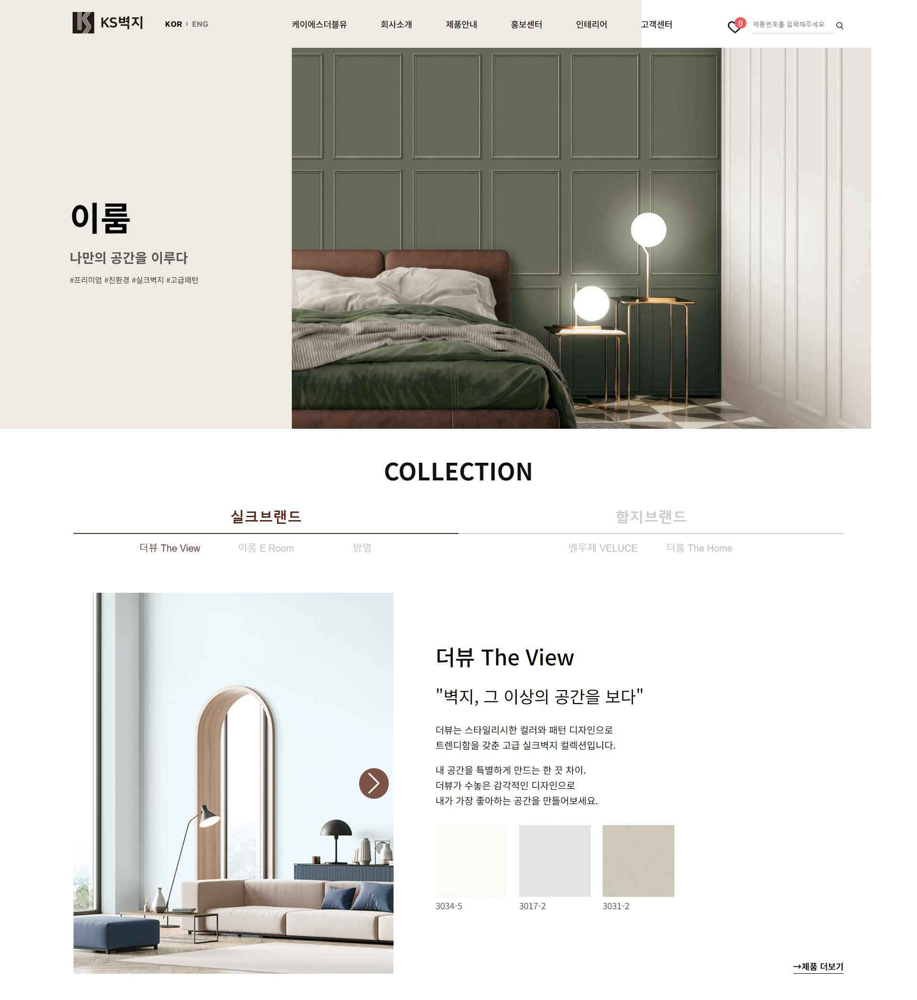
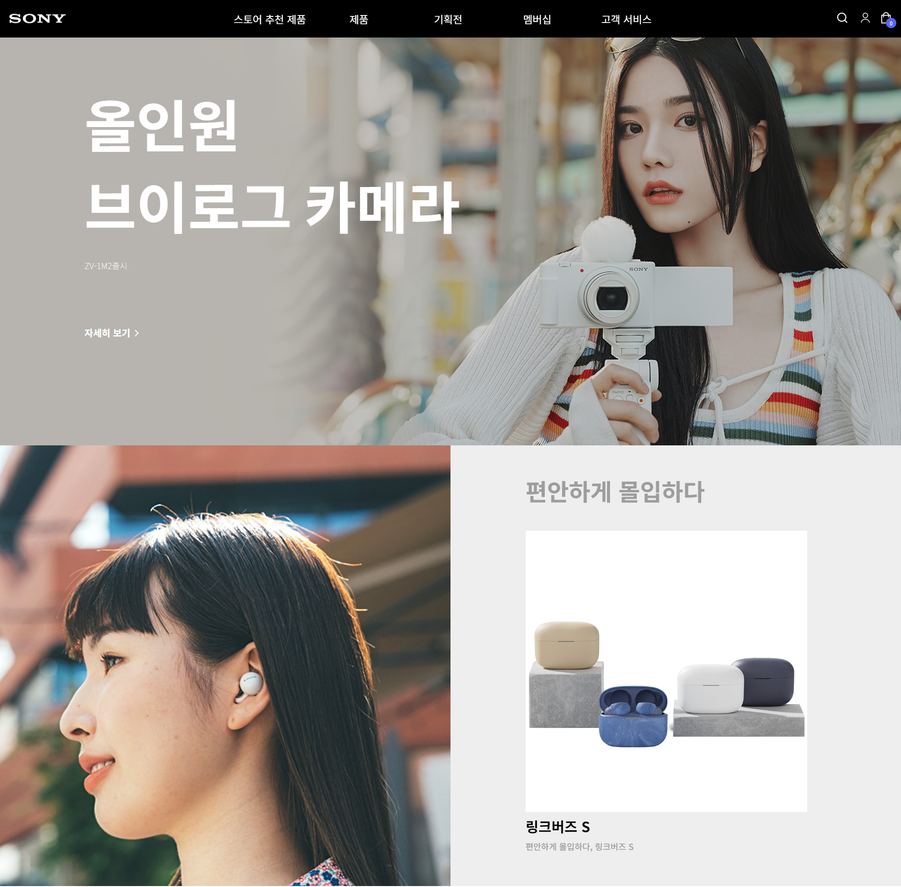
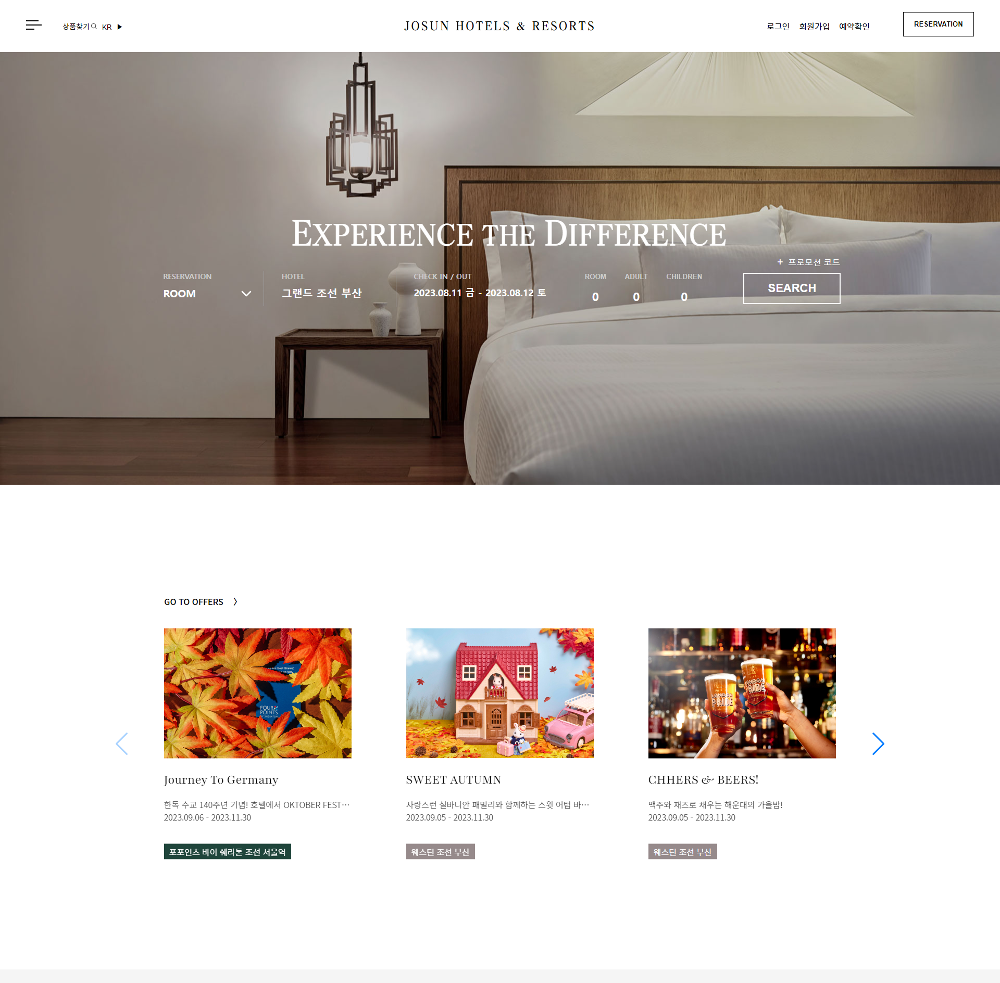
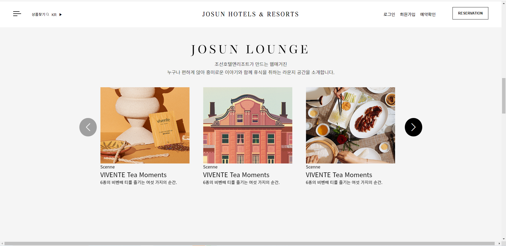
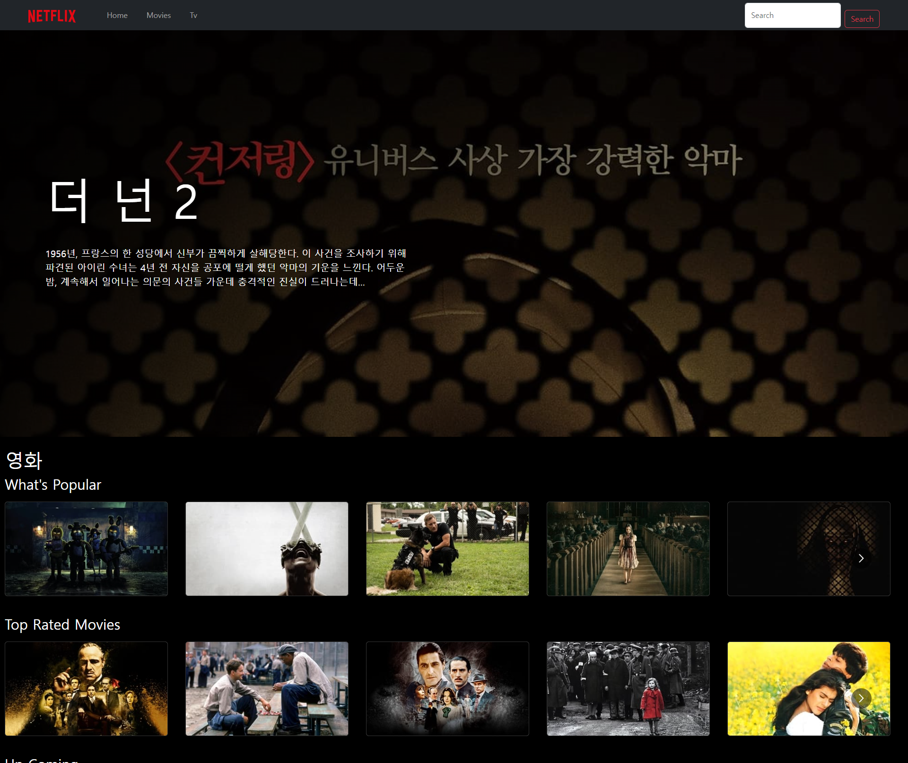
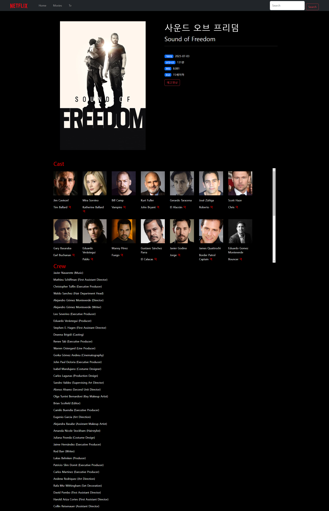

KS벽지
클론코딩
viewport: 반응형 웹
구성: 메인 페이지
참여울: 100%
기능
Netlify를 이용하여 서버배포 github를 사용하여 데이터형상관리 jquery - fullDown Slide Menu/Modal popup 기능 구현 및이중탭 구현 스와이퍼 플러그인 - 여러개의 스와이프 슬라이드 구현 및
네비게이션 기능에 UI마다 다른 커스터마이징 구현 javascript를 활용하여 스크롤 효과 추가 css를 사용하여 다양한 UI사용성 추가


Sony Store
클론코딩
viewport: 반응형 웹
구성: 메인 페이지
참여울: 100%
기능
Netlify를 이용하여 서버배포 github를 사용하여 데이터형상관리 css를 사용하여 다양한 UI사용성 추가 jquery - fullDown Menu 및 Modal popup 기능 구현 스와이퍼 플러그인 - 여러개의 스와이프 슬라이드 구현

JOSUN HOTELS
클론코딩
viewport: PC형 웹
구성: 메인페이지
참여울: 100%
기능
javascript를 사용하여 fullpage화면구현 Netlify를 이용하여 서버배포 github를 사용하여 데이터형상관리 css를사용하여 다양한 UI사용성 추가 jquery - fullDown Slide Menu/Modal popup 기능 구현 스와이퍼 플러그인 - 여러개의 스와이프 슬라이드 구현,내비게이션 버튼 커스텀마이징


NETFLIX
클론코딩
viewport: PC형 웹
구성: 메인 티비, 영화 디테일
참여울: 40%
기능
react를 사용하여 화면구현 TMDB OPEN API를 사용하여 데이터베이스 사용 router를 이용하여 페이지간 연결 Carousel를 사용하여 여러개의 스와이프 슬라이드 구현

